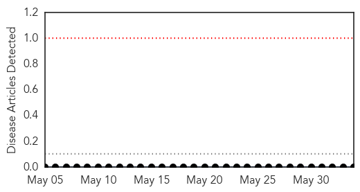
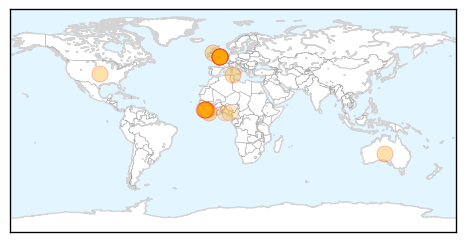

Bubonic Plague
30-Day Web Trend
0 alerts, 0 warnings

30-Day Twitter Trend
0 alerts, 0 warnings

Article Locations

Article Confidences

Top Articles:
-
No articles found for Jun 03, 2014
Top Tweets:
-
No tweets found for Jun 03, 2014
Ebola
30-Day Web Trend
0 alerts, 0 warnings

30-Day Twitter Trend
0 alerts, 0 warnings

Article Locations
Article Confidences

Top Articles:
- 1.000
- Sierra Leone raises Ebola death toll
- 1.000
- UK Mine Workers Leave After Outbreak
- 0.999
- UK employees leave Sierra Leone over Ebola threat
- 0.999
- Sierra Leone confirms seven Ebola cases
- 0.999
- What the U.S. Embassy says about Ebola « Awoko Newspaper
- 0.998
- London mining, African minerals drop on Sierra Leonean ebola
- 0.998
- ‘Community resistance’ hampering WHO Ebola response
- 0.997
- West Africa Ebola virus on high alert, British personnel evacuated – The Upcoming
- 0.995
- 8 Staff at UK Miner Leave Sierra Leone Due to Ebola Virus
- 0.995
- UK mine workers flee Ebola outbreak
- 0.994
- Sierra Leone Ebola outbreak leaves 5 dead, as British mining company employees leave
- 0.993
- Eight staff at UK miner leave Sierra Leone due to Ebola virus
- 0.992
- Ebola outbreak: UK mine workers leave Sierra Leone
- 0.990
- Non-production staff removed from Sierra Leone Mine after Ebola risk
- 0.982
- Ebola fear prompts Britons to leave
- 0.979
- London Mining Company's Non-essential Staff Leave Sierra Leone Over Ebola Threat
- 0.955
- Ebola virus
- 0.756
- BRIEF-London Mining taking precautionary travel measures in Sierra Leone, says production unaffected
- 0.660
- London Mining evacuates staff due to ebola outbreak in Sierra Leone
- 0.600
- NIGERIA: Poor complementary feeding habits fuel malnutrition — Onimawo
- 0.600
- NIGERIA: Doctors’ strike paralyses health services nationwide
Top Tweets:
- 0.906
- Fievre ebola SierraLeone. Compagnie fer britannique London Mining evacue expats "nonessetielle" & mesures monitorer sante staff locale.
- 0.881
- British company London Mining evacuates "non essential" expats ex Sierra Leone because outbreak in east of deadly, incurable ebola disease.
- 0.669
- UK company London Mining pulls nonessential expats ex SierraLeone for fear deadly Ebola virus, monitors all staff: http://t.co/5F4C3wNfVC
- 0.553
- SierraLeone Ebola: Iron ore mine London Mining evacuates 8 nonessential expats, monitors health all employees, restricts internal travel.